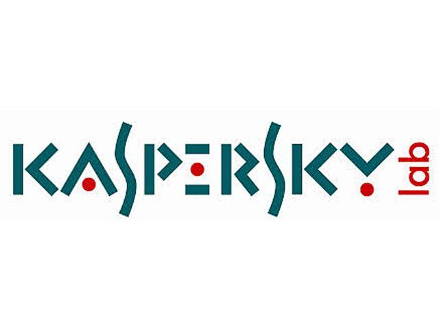
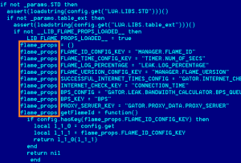
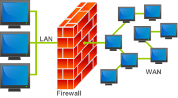

What Kind of Kaspersky Antivirus Key is Right for You?

Are you worried about the security of your computer?Do you want to choose a secure protection software for your computer?Which kind of protection software should you choose?In the following article, we will introduce you to two kaspersky antivirus internet security software keys.
Both AntiVirus and Total Security are based on Kaspersky’s superior malware protection program and provide almost perfect results to stop all types of malicious programs, including ransomware and phishing programs.The big difference is the amount of additional protection you want to invest in.Anti-Virus is quite deboned, while Total Security includes a firewall, a VPN and some of the best main controls in the market.
Kaspersky Anti-Virus and Total Security offer excellent protection and malware detection.When malicious file downloads are started, Kaspersky closes and the threat is quarantined or deleted immediately.Secure search features mark search results to help you easily identify secure websites.The secure Kaspersky browser also includes anti-phishing filters that prevent you from requesting personal information.
All Kaspersky programs include a virtual keyboard that masks all the entries of the keyloggers and other snoops.This is useful when you log in to online accounts, including social networks, email and credit card companies.
In general, Kaspersky is fine.The programs have at least three licenses, with an average of no more than $10 per license.This is well below the average of $30 to $40 for basic antivirus software and $100 for a single premium protection license.On bzfuture.com website, you can get cheap kaspersky key for your computer.
Kaspersky Total Security is one of the most complete Internet security programs.In addition to the firewall, we strongly recommend to any user, in addition to the basic protection against viruses, Total Security includes a system scanner that looks for vulnerabilities, such as obsolete software and weak passwords, and suggests solutions.Secure banking tools are also included to help protect your account and credit card information during online and banking purchases, as well as a VPN to keep trackers, cookies and adware from interrupting follow your online history.
One of the best features of Kaspersky Total Security is parental control.These allow you to determine when your child can be online and what you can see.You can click on filter categories like violence, drugs and pornography.Kaspersky automatically blocks your child’s access to sites that contain this content.It also contains a list of keywords and phrases that your child can not see or write in emails, text messages, personal messages or bulletin boards.These include 'Do not Say' and 'Alone at Home' and you can add yours to the list.B.Birth dates and phone numbers.This is an additional protection against cyberbullying and other bad interpreters to interact with your child.
Kaspersky’s Anti-Virus is a decent program that effectively protects against malware, including ransomware, and is a good business in general.For a few additional dollars, Kaspersky Total Security will cover the entire system.This premium program monitors your Internet connection with the included firewall and reports vulnerabilities such as outdated software that infiltrates hackers and ransomware.The secure banking tools associated with the virtual keyboard protect your keystrokes as follows: You enter bank and credit card accounts and protect your personal information when making purchases online.However, it was the parental controls that asked us to recommend Total Security to Anti-Virus.
Parental Control monitors what your child is doing online, even on mobile phones.You can block inappropriate content and set timers when and for how long you have access to the Internet.The best feature is keywords and phrases.This prevents your child from saying words like 'do not say' and 'what is your name?'Look, even in personal messages.This is a powerful tool to prevent cybernetics and stalkers from asking dangerous questions to your child.
If the above introduction still does not give you a clear choice, then you are welcome to visit bzfuture, where you can find a lot of security protection software, you will no longer need to search for where to buy kaspersky internet security.
[bsa_pro_ad_space id=4]
Posted On: 2019-07-10T00:00:00
Posted By: chasity kenny





Content Date: 2019-07-10
Download Date: 2021-07-09
Document ID: L0C04DV7V